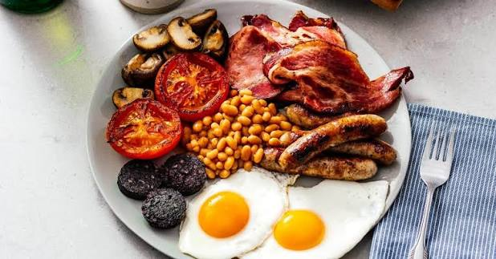

Full English Breakfast

ingredients
- Pork sausages
- Back bacon
- Eggs
- Baked beans
- Mushrooms
- Tomatoes
- Hash browns
- Black pudding
- Toast
Steps
- Heat a large frying pan over medium heat and cook the pork sausages for about 10-12 minutes until browned and cooked through, then keep them warm.
- Add the back bacon and black pudding slices to the same pan and fry for 2-3 minutes on each side until crispy.
- In the remaining fat, sauté the mushrooms and halved tomatoes for 3-4 minutes until tender and slightly charred.
- Meanwhile, warm the baked beans in a small saucepan over low heat until bubbling.
- Fry or bake the hash browns according to the package instructions until golden and crispy.
- Crack the eggs into a clean frying pan with a little oil or butter and fry until the whites are set but the yolks are still runny.
- Toast the bread slices and spread generously with butter.
- Arrange all the cooked ingredients onto a large warm plate and serve immediately.
Back to Homepage